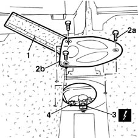
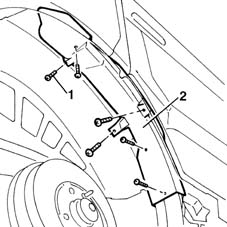
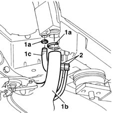
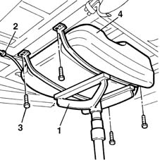
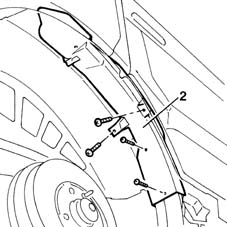
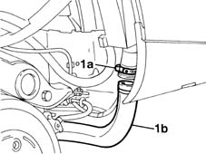
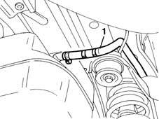
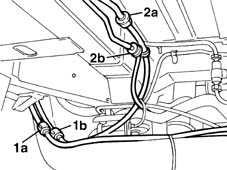
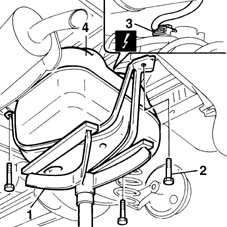
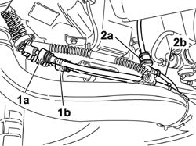

1040A20 FUEL TANK - R + R AND DECANT FUEL FOR VERSIONS WITH EVAPORATION CONTROL SYSTEM
- Path
- Procedures > 10 ENGINE UNIT > 1040 FUEL TANK AND PIPES > 1040A FUEL TANK AND COMPONENTS > 1040A20 FUEL TANK - R + R AND DECANT FUEL FOR VERSIONS WITH EVAPORATION CONTROL SYSTEM
- Kind
- repair procedure (removal / refitting; the operation number is the code)
- Applies to
- engines: 1.6 16v; all production periods
- Interactive page
- https://sloeber94.github.io/elrnDB-fMltpl/en/#/2891243
Applies to: engines: 1.6 16v; all production periods
 Removing
Removing
 Refitting
RefittingWith the ignition key in the OFF position, disconnect the battery negative terminal.
 | Name | Connector |
|---|---|---|
- | Battery |
Place the car on a ramp.
Drain the fuel from the tank using suitable equipment and appropriate protection to meet current safety requirements.
Op. 7050A90 REAR SEAT (ONE) - R RE - REPAIR WITH SEAT REMOVED
Op. 7040L14 PANEL BRACKETS (1) COVERING SEAT ATTACHMENTS TO PASSENGER COMPARTMENT FLOOR - R R
(Carry out this operation on the central and right rear seats)
1. Lift the pre-cut section of the floor covering to gain access to the fuel pump flap.
2. Unscrew retaining bolts (2a) and remove protective cover (2b).
3. Disconnect the electrical connection from the fuel pump and level gauge.
| Name | Connector |
|---|---|---|
3 | Fuel pump and sender unit |
4. Disconnect the fuel supply pipe from the quick-release fitting.

Applies to: engines: 1.6 16v; all production periods
Raise the car.
1. Undo the retaining bolts.
2. Remove the plastic fuel filler pipe protection.

Applies to: engines: 1.6 16v; all production periods
1. Open the collars (1a) and disconnect fuel filler pipe (1b) and pipe (1c) from the supplementary vapour separator.
2. Disconnect both pipes leading from the evaporation control system to the float valves from their quick-release fittings.

Applies to: engines: 1.6 16v; all production periods
1. Position a stand beneath the tank to support it during removal.
2. Disconnect the vapour separator pipe from its quick-release fitting.
3. Undo the tank bracket retaining bolts.
4. Lower the tank, release the vapour separator pipe disconnected previously from the retaining collars on the tank, then remove the fuel tank.

Applies to: engines: 1.6 16v; all production periods
Refitting
RemovingPosition the fuel tank on the stand.
Raise the tank and secure the vapour separator pipe to the collars on the tank.
Raise the tank into it fits into its seat.
Tighten the bolts securing the tank to the body.
Tighten the tank bolts to torque.
 | Fastening | Component | Ø | Value (daNm) |
|---|---|---|---|---|
- | Bolt | FUEL TANK | M8 | 3.5 |
Remove the tank stand.
Connect the pipe to the separator.
Connect the evaporation control system pipes to their quick-release fittings and use new collars to connect the fuel filler pipe and supplementary vapour separator pipe.
Fit the plastic filler pipe protection.
Lower the vehicle.
Connect the fuel delivery pipe to the quick-release fitting.
Connect the electrical connection to the electric pump and level gauge.
Tighten the fuel pump protective cover retaining bolts.
Refit the floor covering.
Op. 7040L14 PANEL BRACKETS (1) COVERING SEAT ATTACHMENTS TO PASSENGER COMPARTMENT FLOOR - R R
Op. 7050A90 REAR SEAT (ONE) - R RE - REPAIR WITH SEAT REMOVED
Remove the vehicle from the ramp.
Use the correct equipment and appropriate protection as required by current safety legislation to fill the vehicle with the recommended fuel.
With the ignition key in OFF position, connect the battery negative terminal.
| Name | Connector |
|---|---|---|
- | Battery |
Applies to: engines: 1.6 16v; production: fino a 05/04; only with equipment: BIPOWER
Removing
RefittingUsing a suitable tool, drain the fuel tank and position suitable extraction fans and protection to meet current safety requirements.
Place the car on a ramp.
Op. 4450B11 TYRE INFLATION VALVE CAP - REPLACE
Raise the car.
1. Undo the fixing bolts.
2. Move the plastic protection for the fuel filler pipe to the side.

Applies to: engines: 1.6 16v; production: fino a 05/04; only with equipment: BIPOWER
1. Open the band (1a) and disconnect the fuel filler pipe (1b).

Applies to: engines: 1.6 16v; production: fino a 05/04; only with equipment: BIPOWER
1. Disconnect the breather pipe from the tank.

Applies to: engines: 1.6 16v; production: fino a 05/04; only with equipment: BIPOWER
1. Disconnect the anti-evaporation system pipes from the rapid connectors (1a) and (1b).
2. Disconnect the fuel filler pipe (2b) from the rapid connector.

Applies to: engines: 1.6 16v; production: fino a 05/04; only with equipment: BIPOWER
1. Position a stand beneath the tank to support it during removal.
2. Undo the bolts fixing the tank to the bodyshell.
3. Lower the tank and disconnect the electrical connection for the electric fuel pump and fuel gauge.
4. Remove the fuel tank.
| Name | Connector |
|---|---|---|
3 | Fuel pump and sender unit |

Applies to: engines: 1.6 16v; production: fino a 05/04; only with equipment: BIPOWER
Refitting
RemovingPosition a stand beneath the tank to support it during removal.
Remove the tank and connect the electrical connection.
Place the tank in its housing, position the mounting brackets and tighten the fixing bolts to torque.
| Fastening | Component | Ø | Value (daNm) |
|---|---|---|---|---|
- | Bolt | FUEL TANK | M8 | 1.2 |
Connect the rapid connector for the fuel supply pipe.
Connect the rapid connectors for the anti-evaporation system pipes.
Connect the breather pipe to the tank.
Connect the fuel filler pipe.
Fit the plastic protection for the fuel filler pipe.
Tighten the fixing bolts.
Lower the vehicle.
Op. 4450B11 TYRE INFLATION VALVE CAP - REPLACE
Remove the vehicle from the ramp.
Using suitable equipment, refill the fuel tank and remove the protection positioned previously to meet current safety requirements.
Applies to: engines: 1.6 16v; production: da 06/04; only with equipment: BIPOWER
Removing
RefittingUse an appropriate tool to drain the fuel tank and arrange suitable aspirators and protections in accordance with current safety regulations.
Position the vehicle on a lift.
Op. 4450B11 TYRE INFLATION VALVE CAP - REPLACE
Raise the vehicle.
1. Undo the retaining bolts.
2. Move the fuel filler pipe plastic protection aside.
Applies to: engines: 1.6 16v; production: da 06/04; only with equipment: BIPOWER
1. Open the band (1a) and disconnect the fuel filler pipe (1b).
Applies to: engines: 1.6 16v; production: da 06/04; only with equipment: BIPOWER
1. Disconnect the breather pipe from the tank.
Applies to: engines: 1.6 16v; production: da 06/04; only with equipment: BIPOWER
1. Disconnect the evaporation control system pipes from the fast-on connectors (1a) and (1b).
2. Disconnect the fuel delivery pipe (2b) from the fast-on fitting (2a).

Applies to: engines: 1.6 16v; production: da 06/04; only with equipment: BIPOWER
1. Position a suitable tool under the tank to support it during the removal operation.
2. Undo the bolts fixing the tank to the bodyshell.
3. Lower tha tank and disconnect the fuel pump and level gauge electrical connection.
4. Remove the fuel tank.
Description | Connector | |
|---|---|---|
3 | Fuel pump and level gauge |
Applies to: engines: 1.6 16v; production: da 06/04; only with equipment: BIPOWER
Refitting
RemovingPosition a suitable tool under the tank to support it during the removal operation.
Raise the tank and connect the electrical connection.
Move the tank to its seat, position the support brackets and tighten the bolts to torque.
Fastening | Component | Ø | Value (daNm) | |
|---|---|---|---|---|
- | Bolt | FUEL TANK WTH EVAPORATION CONTROL SYSTEM | M8 | 1.2 |
Connect the evaporation control system pipe fast-on fitting.
Connect the fast-on fittings of the evaporation control system.
Connect the breather pipe to the tank.
Connect the fuel filler fitting.
Move the fuel filler pipe plastic protection aside.
Tighten the fixing bolts.
Lower the vehicle.
Op. 4450B11 TYRE INFLATION VALVE CAP - REPLACE
Remove the vehicle from the lift.
Use an appropriate tool to refill the fuel tank and remove the protections positioned previously to comply with current safety regulations.
Topics linked from this page (5)
- 4450B11 WHEEL (one) rear - R.R.
- 7040L14 panel brackets (1) covering seat attachments to passenger compartment floor - r r
- 7050A90 rear seat (one) - r re - repair with seat removed
- A1 Battery
- N40 Fuel pump and sender unit